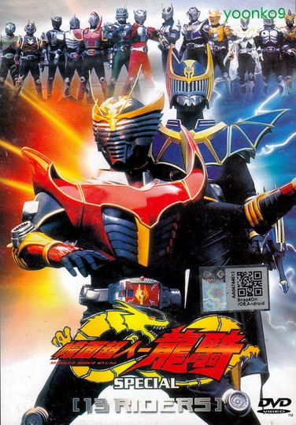

Home
Shinji Kido is a japanese man working as a journelest. One day while looking into th emysterious dissaperances he is pulled into a mirror world by a spide rmonster. He is saved by a masked warrior but now finds himself in the middle of a great war between 12 other warriors.

Company Credits: Toei Company
Release Date: September 19, 2002
Genres: Action, Drama, Fantasy
Rating: 6.9/10
Run Time: 52m